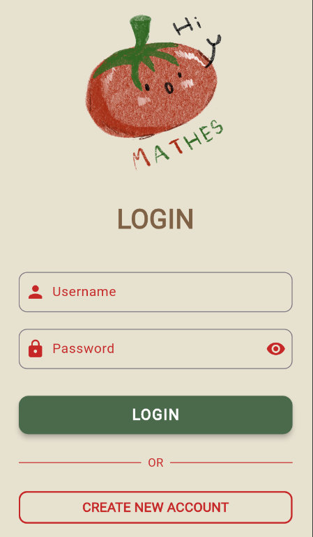
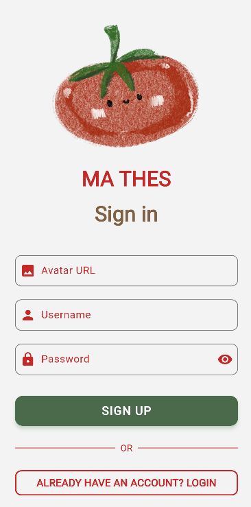
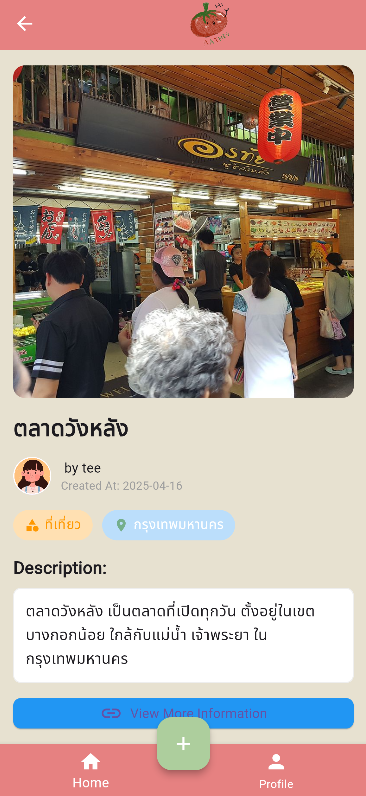
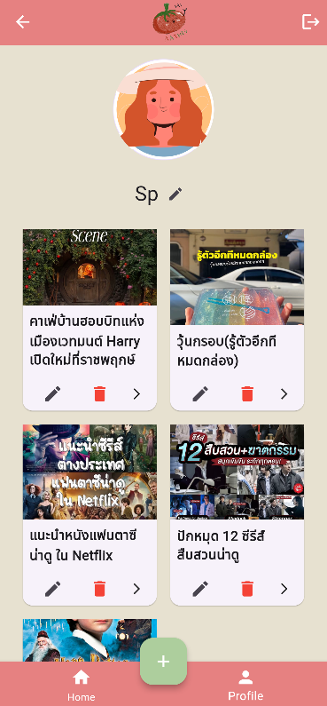

เป็นแอปพลิเคชันที่รวบรวมรีวิวสินค้าต่างๆ ผู้ใช้งานสามารถโพสต์รีวิวสินค้าได้ และสามารถดูรีวิวจากผู้ใช้อื่นๆ ได้
แอปนี้ช่วยให้ผู้ใช้สามารถตัดสินใจซื้อสินค้าต่างๆ ได้ง่ายขึ้น การเขียน App จะใช้ Flutter และ
ใช้ภาษา Dart ในการเขียน Forntend ส่วน Backend จะสร้างAPIขึ้นมาโดยใช้ Node.js และ Vercel ในการเก็บฐานข้อมูลไว้ที่ Dbeaver
ภาษา: Dart
เครื่องมือ: Visual Studio Code, DBeaver, Flutter, Vercel
หน้า Login เป็นการลงชื่อเข้าใช้แอปพลิเคชัน

หน้า Sign in เป็นการกรอกข้อมูลเพื่อสมัครเข้าใช้แอปพลิเคชัน

หน้า Home แสดงรายการรีวิวสินค้าทั้งหมดจากผู้ใช้งาน

หน้า Review Post ของผู้ใช้งานอื่น

หน้าโปรไฟล์ผู้ใช้งาน แสดงรีวิวทั้งหมดที่ผู้ใช้นั้นโพสต์ไว้
